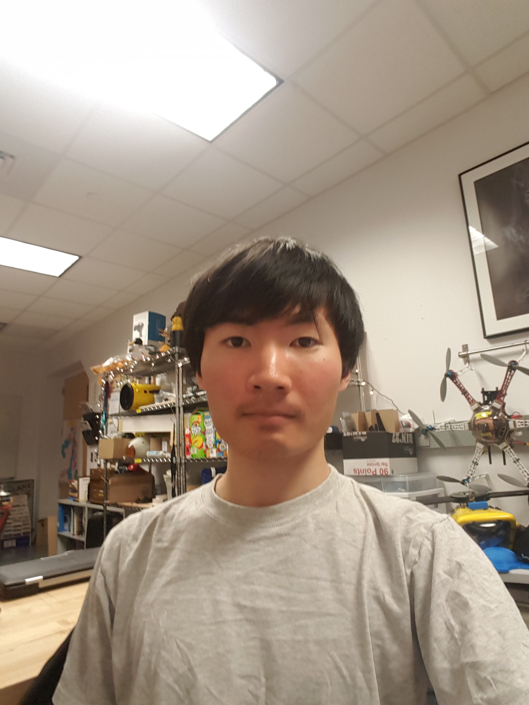

The Terrapin Team
Kaitlyn Keil
Kaitlyn is a second-year student at Olin College, studying Engineering with Computing. She was
one of the members of the Software Subteam, entering with high hopes of learning more about
control loops and creating simple AI
algorithms, as well as communication between different platforms. In other words, she wanted to
learn pretty much everything that involved staring at a computer screen. Strange girl. She
worked
mostly on making sure the turtle didn’t try to hard to run into a wall or hide in a dark corner
somewhere.
Zarin Bhuiyan
Zarin is a third-year student at Olin studying Electrical and Computer Engineering. She is originally from New York City and loves animals, traveling, and boxing. She's very adventurous and loves to meet new people, see new places, and try new cuisines. She's also unbeatable at Guitar Hero drums. She was the other member of the Software Subteam. Her goals for this project included learning more about sensors and control and becoming more familiar with the process of iterative design. She was also in charge of making this website.
Lauren Pudvan
 Lauren is a
second-year student
at Olin College of Engineering, studying Electrical and Computer Engineering. She was the Electrical
Subteam, with a goal of learning more about sensing. She wanted experience with selecting, calibrating,
and implementing sensors that will contribute to the robot being aware of its state and surroundings.
She was excited to even implement things such as operational amplifiers and multiplexers.
This allowed her to apply knowledge from prior classes and improve the functionality of the circuit.
Lauren is a
second-year student
at Olin College of Engineering, studying Electrical and Computer Engineering. She was the Electrical
Subteam, with a goal of learning more about sensing. She wanted experience with selecting, calibrating,
and implementing sensors that will contribute to the robot being aware of its state and surroundings.
She was excited to even implement things such as operational amplifiers and multiplexers.
This allowed her to apply knowledge from prior classes and improve the functionality of the circuit.
Katya Soltan
 Katya is a
second year student at
Olin College concentrating in Robotics. She was part of the Mechanical Subteam, and was involved in
designing and fabricating the turtle. Katya’s goal was to create a beautiful robot turtle, and use this
as incentive to learn about different fabrication methods and how to design for them.
Katya is a
second year student at
Olin College concentrating in Robotics. She was part of the Mechanical Subteam, and was involved in
designing and fabricating the turtle. Katya’s goal was to create a beautiful robot turtle, and use this
as incentive to learn about different fabrication methods and how to design for them.
Jamie Cho
Jamie is a second-year student at Olin College of Engineering Majoring in Robotics Engineering. Although his primary background is on the software side, he wanted to develop more skills in the mechanics side of Robotics, which he worked on for the majority of the project. His primary learning goal was rapid-iterative mechanical prototyping.